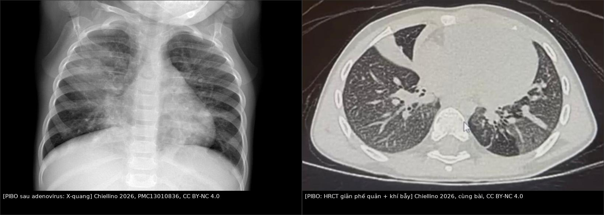
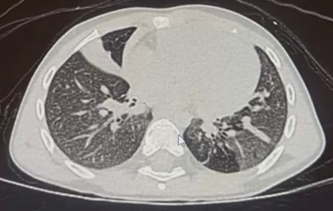

644 — Phục hồi chức năng hô hấp & chuyển tiếp người lớn ở trẻ bệnh phổi mạn sau viêm phổi/hoại tử / Pediatric pulmonary rehabilitation & transition to adult care
Tags: pattern:gian-phe-quan pattern:khi-bay pattern:phoi-bo vung:phoi protocol:HRCT-thi-tho-ra protocol:phuc-hoi-chuc-nang score:spirometry score:6MWT
Mức chắc chắn (certainty): tổng hợp y văn (literature synthesis) — nhóm tự biên từ y văn mở (CC BY 4.0, CC BY-NC 4.0); các ca minh họa giữ đúng mô tả của bài gốc (ca nguyên văn).
619 – Di chứng hô hấp sau hoại tử phổi & cắt thùy trả lời "còn di chứng gì". Bài này trả lời hai câu tiếp theo — phần quyết định chất lượng sống nhiều năm: "mỗi ngày làm gì để giữ phổi" (làm sạch đường thở, tập luyện, thuốc) và "khi lớn thì ai theo, chuyển thế nào để không mất dấu". Nền tảng đường thở nhỏ: 614 – BO & Swyer–James.
1. Tổng quan bệnh học – cơ chế hình ảnh và cơ chế mất chức năng
- Bệnh phổi mạn sau viêm phổi/hoại tử ở trẻ gồm 3 đích tổn thương chồng lấp:
- Đường thở nhỏ bị xơ hóa (viêm tiểu phế quản tắc nghẽn sau nhiễm — post-infectious bronchiolitis obliterans, PIBO): hay sau adenovirus type 3, 7, 21, RSV, sởi, thường ở trẻ < 3 tuổi; tổn thương biểu mô tiểu phế quản → viêm → xơ hóa lòng mạch → tắc nghẽn cố định [World J Clin Pediatr 2026, PMC13010836].
- Ứ đọng dịch tiết + giãn phế quản: sụn và cơ trơn thành phế quản bị phá hủy → phế quản giãn vĩnh viễn, mất kiểu thon dần → ổ ứ mủ, đợt cấp tái diễn.
- Phổi không nở (trapped lung) sau mủ màng phổi: màng phổi xơ như vỏ → phổi không áp về thành ngực dù dẫn lưu thông → tràn khí do giảm thể tích (pneumothorax ex vacuo).
- TẠI SAO đường kính nhỏ lại là "khuếch đại" bệnh (vật lý cơ bản): theo định luật Poiseuille, sức cản tỷ lệ nghịch với lũy thừa 4 của bán kính (R ∝ 1/r⁴) — giảm 20% bán kính làm sức cản tăng ~2,4 lần. Đó là lý do bệnh tiểu phế quản gây khó thở nặng nhưng X-quang gần như bình thường, và vì sao HRCT thì thở ra mới thấy ứ khí.
- TẠI SAO tắc nghẽn thành "cố định": xơ hóa không hồi phục → FEV₁/FVC giảm, FEF25–75 giảm, đáp ứng giãn phế quản < 12%; vì tổn thương đường dẫn khí chứ không phải phế nang → DLCO thường bình thường (khác bệnh mô kẽ) [PMC13010836].
- Ngưỡng định lượng nằm lòng:
- Sau hoại tử phổi/mủ màng phổi: di chứng hình ảnh 56,41% (NP) và 40,0% (PPE) ở mốc 6–9 tháng, nhưng chỉ 10,25% còn di chứng dài hạn; spirometry bất thường 54,54% lúc 3 tháng → 87% hồi phục bình thường lúc 6–9 tháng [Pediatr Pulmonol 2025, PMC12363156].
- Mỗi đợt cấp để lại "sẹo chức năng": sau đợt cấp nặng, 23% (7/30) trẻ không lấy lại > 90% FEV₁ nền trong 3 tháng (dữ liệu PCD — ngoại suy cho PIBO); ở nhóm 85 trẻ/337 đợt cấp, 73,2% đạt > 90% FEV₁ nền lúc ~3 tháng và 84,2% trong 12 tháng [PMC13565917 dẫn Sunther 2016; Gatt 2025].
- Thể lực giảm độc lập với phổi: 34% bệnh nhân PCD 6–29 tuổi có peak VO₂ bất thường dù bệnh "ổn định" [J Clin Med 2026, PMC13565917].
- Vì sao phải làm sạch đường thở chứ không chỉ kháng sinh: kháng sinh diệt vi khuẩn nhưng không sửa được vận chuyển niêm mạc và không lấy dịch tiết ra → ứ đọng → viêm → phá hủy thêm. Đây là lý do làm sạch đường thở (airway clearance) là trụ cột, không phải "hỗ trợ thêm".

Trái: X-quang đông đặc thùy trên và giữa phổi phải ở trẻ viêm phổi adenovirus (sau đó tiến triển PIBO). Phải: HRCT cùng bệnh cảnh — xẹp thùy giữa kèm phế quản hơi, giãn phế quản, mô hình khảm và ứ khí lan tỏa (Chiellino S., World J Clin Pediatr 2026, PMC13010836, CC BY-NC 4.0). Ảnh ghép letterbox, giữ nguyên tỷ lệ.2. Mẫu hình + chẩn đoán phân biệt theo KIỂU SUY GIẢM CHỨC NĂNG (Gamut)
- Nhóm O — tắc nghẽn CỐ ĐỊNH (PIBO/BO): khó thở khi gắng sức, wheeze dai dẳng, không đáp ứng giãn phế quản; HRCT mô hình khảm + ứ khí thì thở ra; tiên lượng theo mức giảm FEV₁ và mức ứ khí.
- Nhóm S — ứ mủ/giãn phế quản (non-CF): ho đờm hằng ngày, đợt cấp tái diễn nhiều lần/năm; HRCT dấu nhẫn con dấu (signet ring), tỷ lệ phế quản/động mạch > 1, thành phế quản dày.
- Nhóm R — hạn chế do phổi không nở (trapped lung): sau mủ màng phổi; khó thở tăng khi nằm, lồng ngực lép bên tổn thương, phổi không nở sau dẫn lưu, mất trượt phổi trên siêu âm; spirometry kiểu hạn chế (FVC giảm, FEV₁/FVC bình thường hoặc cao).
- Nhóm D — mất thể lực (deconditioning): 6MWT giảm, peak VO₂ giảm, nhưng spirometry ổn định; đây là nhóm hưởng lợi nhiều nhất từ phục hồi chức năng và hay bị bỏ qua vì "phổi không xấu thêm".
- Thực tế thường HỖN HỢP O + S + D — vì vậy phải đánh giá 4 miền: triệu chứng/triệu chứng đợt cấp, hiệu suất kỹ thuật làm sạch, chỉ số sinh lý – chức năng, và trải nghiệm của trẻ/gia đình (theo khung 4 miền của bài tổng quan PCD) [J Clin Med 2026, PMC13565917].
- Gợi nhớ 4 nhóm: O-S-R-D (Obstructive, Suppurative, Restrictive/trapped, Deconditioning) — mỗi chữ ứng với một "đòn" điều trị khác nhau, không thay thế nhau.
3. Bảng so sánh phân biệt (ma trận đối chiếu)
| Thực thể (entity) | Hình ảnh / chức năng điển hình | Chốt vào (rule-in) | Chốt loại (rule-out) | Gợi ý xác nhận |
|---|---|---|---|---|
| PIBO (tắc nghẽn cố định) | HRCT mô hình khảm + ứ khí thì thở ra, giãn phế quản; FEV₁/FVC giảm, FEF25–75 giảm, DLCO bình thường, đáp ứng giãn phế quản < 12% | Tắc nghẽn cố định + ứ khí thì thở ra + tiền sử viêm phổi nặng < 3 tuổi | Đáp ứng giãn phế quản rõ ≥ 12% + FeNO cao + dao động → hen | Spirometry trước/sau giãn phế quản; HRCT hít vào–thở ra |
| Giãn phế quản non-CF | Signet ring, BAR > 1, thành dày, ứ dịch; đờm mủ hằng ngày | Ho đờm mạn + đợt cấp tái diễn + signet ring | Không giãn phế quản trên HRCT lát mỏng → không phải nhóm S | HRCT lát mỏng; cấy đờm; sweat test/NO mũi |
| Phổi bó / không nở (trapped lung) | Phổi không nở sau dẫn lưu, pneumothorax ex vacuo, màng phổi dày xơ; FVC giảm | Phổi không áp thành ngực + mất trượt phổi + tiền sử mủ màng phổi | Phổi nở hết sau dẫn lưu → tràn khí/dịch đơn thuần | Siêu âm màng phổi; CT sau dẫn lưu; áp lực màng phổi |
| Hen (asthma) | Phổi "sạch" giữa cơn; FEV₁ hồi phục ≥ 12% và ≥ 200 mL sau giãn phế quản | Hồi phục rõ + biến thiên theo thời gian + FeNO/ eosinophil | Tắc nghẽn cố định, không hồi phục, ứ khí thì thở ra → PIBO | Hô hấp ký; test giãn phế quản; FeNO |
| CF (xơ nang) | Giãn phế quản thùy trên ưu thế, tắc ruột phân su, sweat chloride ≥ 60 mmol/L | Sweat chloride dương + đa cơ quan + giãn phế quản thùy trên | Sweat chloride bình thường, tổn thương một thùy → di chứng sau nhiễm | Sweat test; gen CFTR |
| Mất thể lực (deconditioning) | 6MWT/peak VO₂ giảm nhưng spirometry không đổi; không ứ khí mới | Giảm dung nạp gắng sức + phổi hình ảnh ổn định | Ứ khí/giãn phế quản tiến triển → bệnh phổi đang hoạt động, không chỉ mất thể lực | 6MWT, CPET, đếm bước/ngày |
4. Protocol — bộ đánh giá, "thang" làm sạch đường thở, thuốc và chuyển tiếp
4.1. Bộ đánh giá tối thiểu (theo tuổi)
- Spirometry: làm được khi trẻ ≥ 5–6 tuổi và hợp tác; ghi FVC, FEV₁, FEV₁/FVC, FEF25–75, lặp trước/sau salbutamol.
- Dao động xung (impulse oscillometry — IOS): 3–6 tuổi hoặc trẻ không hợp tác; đo sức cản đường thở nhỏ, không thay thế spirometry.
- Thể tích phổi (plethysmography): > 5–6 tuổi — tìm tăng RV/TLC (ứ khí).
- DLCO: > 7–8 tuổi — bình thường trong PIBO giúp loại bệnh mô kẽ.
- Gắng sức: 6MWT (đơn giản, lặp được) hoặc ISWT; CPET khi cần định lượng peak VO₂ và loại nguyên nhân tim – cơ.
- Hình ảnh: HRCT lát mỏng + thì hít vào VÀ thì thở ra — chỉ chụp thì hít vào bỏ sót ca PIBO; liều < 1 mSv/lần, cân nhắc tích lũy ở trẻ [PMC13010836].
- Vi sinh: cấy đờm (hoặc dịch rửa phế quản khi không khạc được) trước khi dùng kháng sinh dài hạn.
4.2. "Thang" làm sạch đường thở (airway clearance) — chọn theo tuổi và khả năng, KHÔNG theo "thiết bị tốt nhất"
- Nguyên tắc: không có kỹ thuật nào trội hơn — tổng quan hệ thống 2024 (2 thử nghiệm, 54 người 6–20 tuổi) kết luận bằng chứng rất thấp, không có ưu thế FEV₁/FVC của thiết bị so với vỗ lồng ngực kinh điển [J Clin Med 2026, PMC13565917].
- Theo tuổi: < 3 tuổi — kỹ thuật do người chăm sóc làm (đặt tư thế, vỗ rung); 3–6 tuổi — bắt đầu PEP đơn giản khi hợp tác; 6–11 tuổi — ACBT/huff, PEP, OPEP; 12–18 tuổi — tự làm, tự theo dõi, tăng theo nhu cầu.
- Bằng chứng so sánh: OPEP vs vỗ lồng ngực (n = 30, 6–20 tuổi, 2 lần/ngày × 3 tháng, crossover): không khác FEV₁/số đợt cấp, OPEP dễ chịu hơn; HFCWO vs vỗ lồng ngực (n = 24, 7–18 tuổi, 5 ngày): không khác, HFCWO dễ chịu hơn; ACBT tại nhà vs OPEP (n = 32, 6–18 tuổi, 12 tuần): OPEP tốt hơn về FEV₁, MEF25–75 và 6MWT (cỡ mẫu nhỏ, chỉ là tín hiệu) [J Clin Med 2026, PMC13565917].
- Liều thực hành: 1–2 lần/ngày khi ổn định, tăng số lần/ngắn hơn nhưng nhiều hơn khi đợt cấp; ghi rõ thời điểm so với thuốc hít, kỹ thuật huff/cough, vệ sinh dụng cụ, phân công người chăm sóc — đây là phần "đơn" dễ bị bỏ nhất.
4.3. Vận động – phục hồi chức năng (trụ thứ hai, không thay thế làm sạch đường thở)
- Chỉ định: khi có giảm dung nạp gắng sức (6MWT thấp) hoặc peak VO₂ thấp, hoặc để duy trì thể lực trong đợt ổn định.
- Liều đã được nghiên cứu ở trẻ (PCD, n = 36 → 32 phân tích): 40 phút × 3 lần/tuần trong 8 tuần (trò chơi vận động chủ động) cải thiện 6MWT và một số chỉ số cơ lực/chất lượng sống — ngắn hạn, cỡ mẫu nhỏ, chưa chứng minh thay đổi bệnh nền [J Clin Med 2026, PMC13565917].
- Thành phần: aerobic + kháng lực + bài tập cơ hô hấp khi có yếu cơ hít vào tái lập được; ưu tiên hình thức trẻ thích để duy trì được lâu.
- Theo dõi: 6MWT/ISWT mỗi 3–6 tháng; đừng lấy "tập thể dục" thay cho kỹ thuật làm sạch đường thở.
4.4. Thuốc và hỗ trợ — chỉ dùng khi có đích
- Azithromycin 10 mg/kg × 3 lần/tuần (tác dụng chống viêm, dùng trong bệnh đường thở tắc nghẽn mạn) [PMC13010836].
- Corticoid tĩnh mạch xung: methylprednisolone 10–30 mg/kg × 3 ngày, lặp hàng tháng trong 3–6 tháng ở PIBO nặng — bằng chứng yếu, chuỗi nhỏ, không đối chứng; tránh corticoid uống dài ngày vì nhiễm trùng, loãng xương, chậm tăng trưởng [PMC13010836].
- ICS liên tục ở trẻ > 5 tuổi giai đoạn lui bệnh: cải thiện FVC/FEV₁ sau 12 tháng so với dùng ngắt quãng (hồi cứu, n = 34) [PMC13010836].
- Khí dung 3 thành phần (budesonide + terbutaline + ipratropium) ở trẻ nhỏ: cải thiện TPEF%/TE và VPEF%/VE, HRCT cải thiện 82% (n = 30, trung vị 17 tháng) — không đối chứng.
- Oxy: chỉ định khi SpO₂ < 92%; không sửa được bệnh nền nhưng phòng tăng áp lực động mạch phổi.
- Vaccine cúm hằng năm + phế cầu; dinh dưỡng (tăng trưởng = sức cơ hô hấp); tầm soát trào ngược/hít sặc nếu có.
- Mucolytic: hypertonic saline 7% chỉ như thử nghiệm có theo dõi (thử nghiệm ở người lớn PCD n = 22, 12 tuần: không cải thiện SGRQ, tác dụng phụ nhẹ nhưng nhiều hơn); mannitol (n = 343) không cải thiện chất lượng sống rõ; rhDNase làm TĂNG đợt cấp ở giãn phế quản không-CF (n = 349) → không dùng thường quy [J Clin Med 2026, PMC13565917].
4.5. Chuyển tiếp sang người lớn — bắt đầu từ 12–14 tuổi, không đợi đến 18
- Khung 6 yếu tố cốt lõi (Six Core Elements — Got Transition): chính sách chuyển tiếp → theo dõi/đăng ký → hồ sơ chuyển tiếp → kế hoạch chuyển tiếp → chuyển giao (transfer) → đánh giá sau chuyển. Các chương trình áp dụng khung này giảm rõ tỷ lệ "rơi khỏi hệ thống" ở tuổi vị thành niên [PMC13470829].
- Lịch thực hành: 12–14 tuổi bắt đầu giáo dục tự quản (biết tên thuốc, kỹ thuật, đợt cấp); 15–17 tuổi tập tự đặt lịch, tự làm kỹ thuật, có bản tóm tắt hồ sơ bằng văn bản; 18–21 tuổi chuyển giao chính thức, có buổi khám bàn giao giữa 2 bác sĩ.
- Thực tế đang thiếu: khảo sát 51 bác sĩ hô hấp nhi/người lớn (14 vùng, Ý): 64,7% không có chương trình chuyển tiếp, chỉ 15,7% luôn trao đổi chuyển tiếp với trẻ/gia đình, 13,8% có phòng khám chuyển tiếp riêng; 76,5% đề xuất lập phòng khám chuyên biệt [PMC13641742].
- Nội dung bàn giao tối thiểu: chẩn đoán + mốc tổn thương, spirometry gần nhất (FEV₁% và FEV₁/FVC), HRCT gần nhất, vi sinh đờm, danh sách thuốc + kỹ thuật làm sạch đang dùng, kế hoạch đợt cấp, tiêm chủng, vấn đề tăng trưởng/dậy thì/tâm lý, và ai là người liên hệ.
flowchart TD
A["Trẻ bệnh phổi mạn sau viêm phổi/hoại tử"] --> B["Đánh giá 4 miền:<br/>triệu chứng, kỹ thuật, sinh lý, trải nghiệm"]
B --> C{"Kiểu suy giảm?"}
C -->|"O: tắc nghẽn cố định"| D["Làm sạch đường thở + azithromycin<br/>± corticosteroid xung theo đợt"]
C -->|"S: giãn phế quản ứ mủ"| E["Làm sạch đường thở 1-2 lần/ngày<br/>kháng sinh theo đợt + vaccine"]
C -->|"R: phổi bó"| F["Tránh đặt lại ống nhiều lần<br/>hội chẩn màng phổi khi khó thở dai dẳng"]
C -->|"D: mất thể lực"| G["Tập aerobic + kháng lực<br/>40 phút x 3 lần/tuần"]
D --> H["Đánh giá lại 3 tháng<br/>spirometry + 6MWT"]
E --> H
F --> H
G --> H
H --> I{"12-14 tuổi?"}
I -->|"Chưa"| J["Tiếp tục theo dõi 3-6 tháng<br/>giáo dục tự quản dần"]
I -->|"Rồi"| K["Bắt đầu chương trình chuyển tiếp<br/>6 yếu tố cốt lõi"]
K --> L["15-17 tuổi: tự làm kỹ thuật,<br/>hồ sơ chuyển tiếp bằng văn bản"]
L --> M["18-21 tuổi: khám bàn giao<br/>bác sĩ nhi + bác sĩ người lớn"]
M --> N["Đánh giá sau chuyển 6-12 tháng<br/>không để rơi khỏi hệ thống"]
5. Biến thể bình thường và cạm bẫy
- Spirometry bình thường sớm không loại trừ PIBO: giai đoạn đầu và ca nhẹ có thể bình thường; theo dõi dọc quan trọng hơn một lần đo [PMC13010836].
- Chỉ chụp HRCT thì hít vào = bỏ sót ứ khí: nhiều ca BO chỉ lộ khi có thì thở ra; ở trẻ < 6 tuổi có thể cần gây mê/thiết bị siêu nhanh — cân nhắc lợi ích.
- "Không tuân thủ" thường là "không khả thi": bỏ buổi tập vì trường học, mệt, thiếu dụng cụ, ngại nơi đông người — hỏi rào cản trước khi tăng bậc thiết bị; dạy lại kỹ thuật trước khi đổi máy.
- Đáp ứng giãn phế quản dương ≠ hen: ở PCD, 18,1% test dương nhưng không đồng nghĩa cần ICS; chỉ điều trị khi có bệnh cảnh đáp ứng corticoid [J Clin Med 2026, PMC13565917].
- Corticoid uống dài ngày là bẫy: lợi ích ngắn hạn nhưng nhiễm trùng, loãng xương, chậm tăng trưởng — ưu tiên xung tĩnh mạch/ICS và các trụ cột không corticoid.
- Phổi bó không phải "tràn khí chưa lành": đặt lại ống dẫn lưu nhiều lần chỉ tăng nhiễm trùng, không làm phổi nở; cần hội chẩn màng phổi khi khó thở dai dẳng.
- Chuyển tiếp muộn = mất dấu: chờ đến 18 tuổi mới bàn giao thường rơi vào đúng lúc trẻ đổi trường/nơi ở; bắt đầu từ 12–14 tuổi và luôn có bản tóm tắt bằng văn bản.
- Tập luyện không thay thế làm sạch đường thở: hai trụ không thể thay thế nhau; bỏ kỹ thuật làm sạch vì "đã tập thể dục" là sai lầm hay gặp.
6. Tự lượng giá — Blind Quiz
Ca 1 — Trẻ 7 tuổi, ho + wheeze dai dẳng 8 tháng sau viêm phổi adenovirus; không đáp ứng thuốc giãn phế quản.

- Hỏi: mô tả 3 dấu hiệu chính? Vì sao DLCO có thể bình thường? Cần thêm chuỗi chụp nào?
Bấm để hiện đáp án
- Xẹp thùy giữa kèm phế quản hơi, giãn phế quản, mô hình khảm và ứ khí lan tỏa → PIBO.
- DLCO bình thường vì tổn thương ở đường dẫn khí, không phá vỡ màng phế nang–mao mạch.
- Cần HRCT thì thở ra (ứ khí) + spirometry trước/sau giãn phế quản (tắc nghẽn cố định, đáp ứng < 12%).
- Nguồn: Chiellino S., World J Clin Pediatr 2026, PMC13010836, CC BY-NC 4.0.
Ca 2 — Cùng bệnh nhi, phim chụp ở giai đoạn viêm phổi cấp:

- Hỏi: đông đặc ở đâu? Vì sao phim này không dự đoán được di chứng?
Bấm để hiện đáp án
- Đông đặc thùy trên và thùy giữa phổi phải trong viêm phổi adenovirus.
- X-quang nhạy kém/đặc hiệu kém cho PIBO: chỉ thấy tăng thể tích hoặc xẹp phổi không đặc hiệu; không loại trừ và không xác nhận di chứng — phải dựa vào HRCT + spirometry theo dõi.
- Nguồn: Chiellino S., World J Clin Pediatr 2026, PMC13010836, CC BY-NC 4.0.
Ca 3 — Bệnh nhân 16 tuổi, PIBO + giãn phế quản, FEV₁ 62% dự đoán, sắp thi đại học, hay bỏ buổi tập vì "không có thời gian":
- Hỏi: 3 việc ưu tiên trong 6 tháng tới? Khi nào bắt đầu chuyển tiếp? Cần gì trong hồ sơ bàn giao?
Bấm để hiện đáp án
- (1) Giữ làm sạch đường thở hằng ngày (1–2 lần/ngày, chọn kỹ thuật trẻ làm được — OPEP/ACBT), (2) tập aerobic + kháng lực 40 phút × 3 lần/tuần (ưu tiên hình thức trẻ thích, ví dụ trò chơi vận động), (3) rà rào cản (thời gian, dụng cụ, ngại) thay vì gọi "không tuân thủ".
- Bắt đầu chuyển tiếp ngay (16 tuổi đã trong giai đoạn 15–17): tập tự đặt lịch, tự làm kỹ thuật, bản tóm tắt hồ sơ bằng văn bản.
- Hồ sơ bàn giao: chẩn đoán/mốc tổn thương, FEV₁% + FEV₁/FVC gần nhất, HRCT gần nhất, vi sinh đờm, thuốc + kỹ thuật đang dùng, kế hoạch đợt cấp, vaccine, ai là người liên hệ.
- Nguồn khung chuyển tiếp: Pediatr Pulmonol 2026, PMC13470829; rào cản hệ thống: PMC13641742.
Bài liên quan chéo
- 619 – Di chứng hô hấp sau hoại tử phổi & cắt thùy
- 614 – BO & Swyer–James
- 616 – Biến chứng viêm phổi nhi: empyema & hoại tử
- 669 – Theo dõi dài hạn BO/Swyer–James
- 673 – Chuyển tiếp người lớn ở spina bifida/bàng quang thần kinh
Không dùng để chẩn đoán độc lập khi chưa có người hướng dẫn.